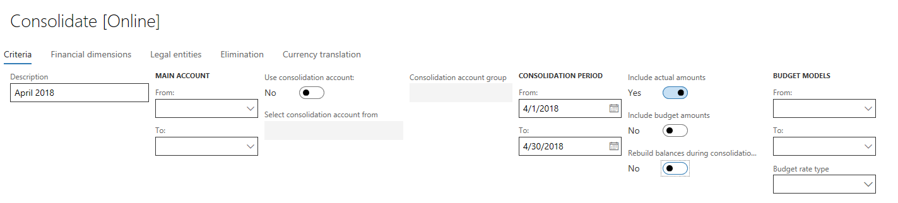
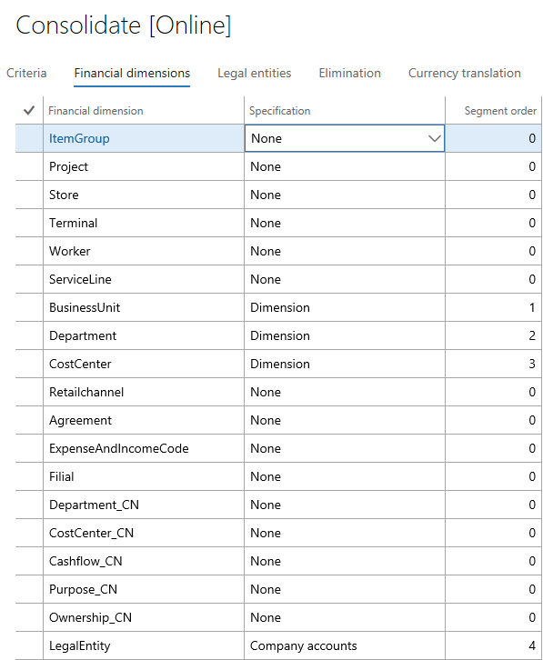
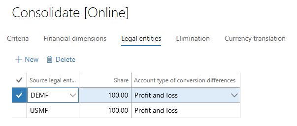
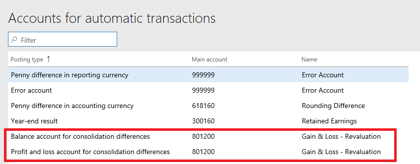
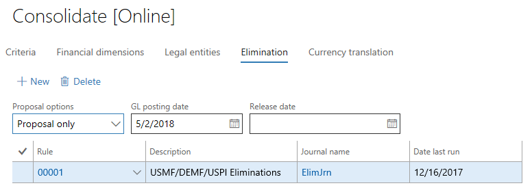
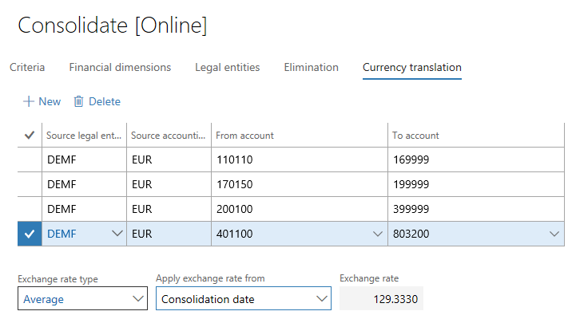

Online Finanzkonsolidierungen
Important
Dynamics 365 for Finance and Operations hat sich zu speziell entwickelten Anwendungen entwickelt, mit denen Sie bestimmte Geschäftsfunktionen verwalten können. Weitere Informationen zu diesen Änderungen finden Sie im Dynamics 365-Lizenzierungshandbuch.
In diesem Thema wird die Online-Finanzkonsolidierungen und Währungsumrechnung im Hauptbuch behandelt. Bevor Sie dieses Thema lesen, sollten Sie unbedingt das Thema Finanzielle Konsolidierungen und Währungsumrechnung – Übersicht lesen.
Nachdem Sie die Einstellungen abgeschlossen haben, geben Sie die Details der Konsolidierung auf der Seite Konsolidieren [online] ein. Wenn Sie fertig sind, können Sie auch OK oder Charge klicken, um die Konsolidierung zu verarbeiten.
Kriterien
Auf der Registerkarte Kriterien auf der Seite Konsolidieren [online] definieren Sie die Konten, Zeiträume und die Art von Daten, die konsolidiert werden soll.

Hier ist eine Erläuterung der Konfiguration in dieser Registerlarte:
Beschreibung – Geben Sie eine präzise Beschreibung für die Periode ein, die zum Konsolidieren ist.
Hauptkonto – Verwenden Sie die Felder in diesem Abschnitt, um die Hauptkonten zu definieren, die verarbeitet werden.
- Von und Bis geben einen Bereich von Konten zum Verarbeiten an. Werden diese Felder nicht ausgefüllt, werden alle Konten von allen Unternehmen auf das Konsolidierungsunternehmen verschoben. Wenn Sie vier Unternehmen konsolidieren, und in jedem Unternehmen ein anderer Kontenplan vorhanden ist, werden die Konten von allen vier Unternehmen im konsolidierten Unternehmen erstellt.
- Konsolidierungskonto verwenden – Wenn Sie die Option auf Ja setzen, wird das Feld Auswahlquelle für Konsolidierungskonto verfügbar. In diesem Feld wählen Sie aus, ob alle Konten mit dem Konsolidierungskonto konsolidiert werden soll, das auf der Seite Hauptkonten festgelegt wurde, oder Sie ein anderes Konto von einer der Konsolidierungskontogruppen auswählen möchten.
- Konsolidierungskontengruppe – Wählen Sie die Gruppe aus, die für die Hauptkontozuordnung für die Konsolidierung zu verwenden ist.
Konsolidierungsperiode – Verwenden Sie die Felder in diesem Abschnitt, um die Konsolidierungsperiode zu definieren.
- Von und Bis – Geben Sie einen Datumsbereich für die Konsolidierung an. Wenn Sie dieses Feld leer lassen, wird die Konsolidierung für alle Perioden im Sachkontokalender verarbeitet, die für das Unternehmen definiert sind. Dieses Feld sollte nicht unausgefüllt bleiben.
- Istbeträge einbeziehen – Legen Sie diese Option auf Ja fest, um die tatsächlichen Daten konsolidieren zu können.
- Budgetbeträge einbeziehen – Legen Sie diese Option auf Ja fest, um Daten aus dem Budgetregister zu konsolidieren.
- Erstellen Sie Salden für die Konsolidierung neu – Es empfiehlt sich nicht, dass Sie Option auf Ja festlegen. Stattdessen erstellen Sie Salden als separater Stapelverarbeitungsauftrag.
Budgetmodelle – Wenn Sie ausgewählt haben, dass Budgetdaten zusammengeführt werden sollen, verwenden Sie die Felder in diesem Abschnitt, um Budgetmodelle zu definieren.
- Von und Bis geben einen Bereich von Modellen zum Verarbeiten an.
- Budgetkurstyp – Wählen Sie den Typ des Budgetsatzes aus, um für Währungsumrechnung von Budgetdaten zu verwenden.
Finanzdimensionen
Finanzdimensionen Auf der Registerkarte definieren Sie die Dimensionen, die im Konsolidierungsunternehmen einbezogen werden sollen. Wenn Sie eine Dimension auswählen, legen Sie das Feld Spezifikation auf Dimension fest, und definieren Sie dann die Reihenfolge der Dimension im Konsolidierungsunternehmen.

Unabhängig von der Reihenfolge, die Sie definieren, ist immer Hauptkonto das erste Segment.
Juristische Personen
Auf der Registerkarte Juristische Personen definieren Sie die Dimensionen, die im Konsolidierungsunternehmen einbezogen werden sollen. Sie können auch den Besitzprozentsatz dieser Unternehmen definieren. Wenn Sie einem Besitz von weniger als 100 Prozent angeben, wird der angegebene Prozentsatz auf das Konsolidierungsunternehmen zusammengefasst. Für alle Übersetzungsdifferenzen wird das Feld Kontenart für Konvertierungsdifferenzen verwendet, um das Hauptkonto aus der Einstellung auf der Seite Konten für automatische Buchungen auszuwählen.


Löschung
Auf der Registerkarte Löschung haben Sie drei Optionen zum Verarbeiten von Vorkalkulationen:
- Dient zum Auswählen der Löschungsregel, und dann im Feld Vorschlagsoptionen aus, wählen Sie Nur Vorschlag aus. Diese Option verarbeitet die Löschung während des Konsolidierungsprozesses, wird aber nicht alle in einem Schritt buchen. Sie können die Erfassung später buchen.
- Dient zum Auswählen der Löschungsregel, und dann im Feld Vorschlagsoptionen wählen Sie Nur Vorschlag aus. Diese Option verarbeitet die Löschung während des Konsolidierungsprozesses und wird alle in einem Schritt buchen.
- Führen Sie den Löschungvorschlag getrennt vom Konsolidierungsprozesses als indem Sie die Löschungserfassung ausführen.

Weitere Informationen zur Löschung finden Sie unter Löschungsrichtlinien
Währungsumrechnung
Auf der Registerkarte Währungsumrechnung definieren Sie die juristische Person, das Konto und den Wechselkurstyp und den Wechselkurs. Drei Optionen stehen im Feld Wechselkurs übernehme zur Verfügung:
- Konsolidierungsdatum – Das Datum der Konsolidierung wird verwendet, um den Wechselkurs zu erhalten. Der Kurs der Entität entspricht der Spot- oder Monatendkurs. Sie sehen eine Vorschau des Satzes, aber Sie können ihn nicht bearbeiten.
- Buchungsdatum – Das Datum jeder Buchung wird verwendet, um einen Wechselkurs auszuwählen. Diese Option ist für Anlagen häufig und wird oft als historischer Satz bezeichnet. Sie können eine Vorschau des Satzes nicht finden, da es viele Sätze für die verschiedenen Buchungen im Kontenbereich gibt.
- Benutzerdefinierter Satz – Wenn Sie diese Option aktivieren, können Sie den Wechselkurs eingeben, den Sie wünschen. Diese Option kann für durchschnittliche Wechselkurse hilfreich sein oder wenn Sie mit einem festen Wechselkurs konsolidieren.

Zusätzliche Ressourcen
Weitere Informationen zur Konsolidierung und Währungsumrechnung finden Sie im übergeordneten Thema dieses Themas, Finanzkonsolidierungen und Übersicht zur Währungsumrechnung.
Informationen zum Szenarien, in denen Sie möglicherweise Finanzaufstellungen generieren können, finden Sie unter Konsolidierte Finanzaufstellungen erstellen.